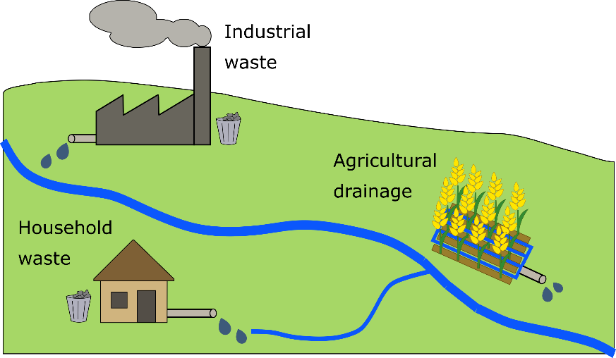

While natural causes are responsible for some contaminants in groundwater, most groundwater contamination is caused by human activity. Waste materials left untreated, either in solid or liquid form, can be transported through the soil with rain or surface water to reach the groundwater. In time, the concentration of contaminants may make the groundwater unsuitable for use.
Waste can be generated by different sectors. Domestic waste sources include untreated waste water, sludge from waste water treatment plants, and household waste. Agricultural waste includes fertilizers and pesticides on the soil surface or in the water drained from fields. Industrial waste can include wastewater, chemicals and oil.
